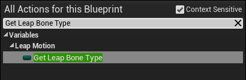

Tutorial: The Custom Controller Demo¶
The Custom Controller Demo example illustrates how to extend the Leap Motion Controller Actor and LeapMotionBoneActor classes using blueprints. The Unreal Engine project containing this example is available in our Example Gallery at: https://developer.leapmotion.com/gallery/unreal-4-7-demo-pack.
In this tutorial, we will recreate the Custom Controller Demo level, which simply prints debug hand information to the screen and output message log. We will create two blueprints that extend the Controller Actor and Bone Actor classes to do the printing. While printing strings to the screen is not extraordinarily exciting, it does show how to access key information and events.
Before diving in, take a moment to examine the already-built level in the Leap Example project to see what we will be building. Open the Leap Examples project and double-click on Maps/CustomControllerDemo. Press play and put your hands over your Leap Motion device. You should see something like this:
The custom blueprint code prints out the ids of the hands that are added and removed from view and the world locations of the fingertips.
Now, let’s get started by creating a new level and a custom Leap Motion Controller Actor Blueprint. You can refer back to the CustomControllerDemo map and blueprints for reference.
File > New Level
Choose the Default template, which has a floor and skybox.
Add a Leap Motion Controller Actor just in front of the Player Start marker.
- Type “Leap” in the Mode panel to locate the controller actor class.
- Drag the Leap Motion Controller Actor into the level.
With the Leap Motion Controller Actor selected in the World Outliner, click the Blueprint/Add Script button
Edit the blueprint to open the Blueprint Graph Editor window.
Using Hand Added and Removed events¶
In the Leap Motion Controller Actor blueprint, we are going to use the hand added and hand removed events and print a debug message containing the hand id to the screen and output log.
The first step is to add nodes for these events to the Leap Motion Controller Actor blueprint we just created:
- In the Components list in the upper left corner of the Blueprint editor window, select the LeapMotionControllerComponent. This will show properties of the component in the Details panel on the right side of the window.
- Scroll to the bottom of the Details panel to reveal the Events section.
- Click the + buttons next to the On Hand Added and On Hand Removed events to add these nodes to the blueprint graph.

Notice that these events have an output pin for the Hand id. We will use the Unreal Print String function to display the id when one of these events is dispatched.
- Add a String Append function to the Eventgraph.
- Wire the Hand Id output from the hand added event to the Append B input pin.
- For the A pin, enter the text, “Hand added:”.
- Add a Print String function.
- Wire the Append return value to the In String pin. Set the Text Color, as desired.
Repeat these steps to hook up the On Hand Removed event.
Extending the Bone Actor class¶
The LeapMotionBoneActor object represents the physical parts of the hand, including the forearm, the palm, and three segments per finger. When a hand is added, the Hand Actor spawns a Bone Actor for each of these parts. The Bone Actor contains the physical positions, orientations, visuals, and colliders of the hand.
To illustrate how to access information for particular bones, we are going to extend the Bone Actor class with a blueprint that prints out the position of the index finger tip.
- In the Unreal Editor Toolbar, use the Blueprints command to open the Create New Empty Blueprint dialog.
- Open the All Classes list at the bottom of the dialog box.
- Type “Leap” into the search field.
- Select LeapMotionBoneActor and click Select.
- Assign a name to the Blueprint class and create it.
- The Blueprint editor opens, displaying your new class. Go to the Event Graph tab.
We are going to use the Event Tick node to execute the Blueprint every Unreal tick. Our script will perform three tasks:
- Check whether the current bone is the finger tip (since we only want to print out the location of this bone and not for any of the others).
- Get the location of the bone.
- Print the location to the screen.
You might have noticed that the pre-built Custom Controller Demo sample uses a time accumulator local variable so that the position is only printed once every half-second. In this example, we will leave that part out to keep things simple.
For the first step, add the Leap Bone Type variable to the blueprint. Open the Actions menu and type”Get Leap Bone Type” in the search box:
Next, drag off the output pin, and choose Equal (Enum) from the Actions list.
Choose Finger1Tip from the list of bone names, which is defined by the ELeapBone enumeration. The fingers are numbered 1-4, index to pinky.
Add a Branch node to the blueprint.
Wire the output of the Equals node to the input Condition pin of the Branch node.
Wire the Event Tick Exec pin to the Branch Exec input.
For the second task, we need to get the finger tip position. This requires one node: Get Actor Location. Since the base Bone Actor class has already converted the incoming Leap Motion tracking data into Unreal coordinates and updated the in-game bone position, we can simply use the standard actor location:
To complete the blueprint, convert the position vector to a string, append it to the label “Index finger tip is at: ” and print it:
Set the Bone Actor class¶
Before our new Bone Actor extension will be used, we have to tell the Leap Motion Controller Actor about it.
On the Unreal Viewport window, select your Leap Motion Controller Actor in the World Outliner.
In the Details panel, find the Bone Blueprint setting in the Leap Motion section.
Set the property to use your new class.
Now you can run the level and see the debug print statements on the screen.